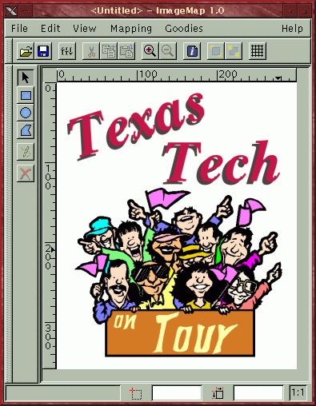
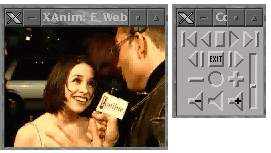
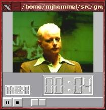
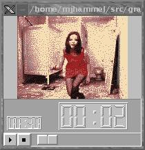
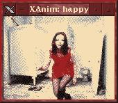
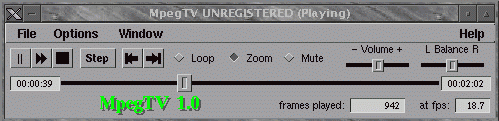
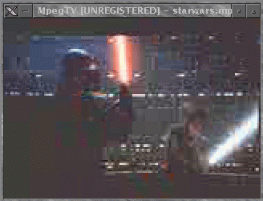
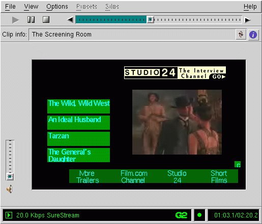

muse:
- v; to become absorbed in thought
- n; [ fr. Any of the nine sister goddesses of learning and the arts in Greek Mythology ]: a source of inspiration
|
muse:
|
 |
|
| I've
actually had a fun time putting this months column together. In the
past I had been trying to find technical issues to talk about from a layman's
point of view - graphics for the masses. This month, I just sat down
and thought about it the way I do things. I play. I find something
new and fiddle with it. If it's easy to learn and I can do something
useful with it in a few minutes, I keep fiddling. If not, I lose
interest and come back some other time, hopefully when the application
has evolved a bit more.
This month I started out by looking for video editing software for Linux. Now, don't get your hopes up. As with many good ideas, it started in one direction and headed slightly off center - I didn't do a write up on video editing software. Instead, I looked at video viewing software. This is something I thought the average user might have real use for. But if you're still hoping to find out what's in store for the video editing world, don't lose hope. I plan on visiting that arena soon. We just need the tools that are currently available to mature a little more, and we also need a few more options to choose from for our video editing needs. So, in this months column you'll find:
|
|

|
"One of the top prizes in a prestigious electronic art competition has been given to a deliberately unusual choice: the Linux computer operating system." (free registration required) http://www.nytimes.com/library/tech/99/mo/cyber/articles/01linux.html |
Spatial Inc. a developer
of open, component 3D modeling technology and product data access, exchange,
and sharing solutions, today announced the availability of ACIS® 3D
Toolkit[tm] on Red Hat® Software, Inc.'s LINUX[tm] operating system.
This port will arrive in conjunction with Spatial's scheduled release of
ACIS 3D Toolkit 5.2 in mid June.
http://linuxpr.com/releases/32.html
XScreenSaver is a modular screen saver and locker for the X Window System. It is highly customizable and allows the use of any program that can draw on the root window as a display mode. More than 100 display modes are included in this package.
Changes: Added new
demos webcollage and petri, and made it possible to use the
vidwhacker
demo in a pipeline.
New version of shadebobs,
improved image selection in webcollage, and sped it up slightly,
made configure find the right version of perl, `make clean' was deleting
some things it shouldn't and fixed a typo in the default programs list.
http://www.jwz.org/xscreensaver/
Swift-Generator is a utility 'ala' Macromedia Generator. It aims at dynamically replacing texts, fonts, sounds, images and movie clips in either Template Generator files or standard Flash files. This allows Webmasters to create dynamic content such as stock tickers, news tickers, weather forecasts and the like.
Changes: Text alignment support
has been added.
http://www.swift-tools.com/
gd is a library used to create
.GIF images. It has many nice features and can be used in scripts (e.g.
PHP) for dynamic image generation.
http://www.boutell.com/gd/
The HP VISUALIZE PL450 and XL550 Personal Workstations will ship with Linux and deliver leading application performance for popular Electronic Design Automation (EDA) software solutions from Avant!, Mentor Graphics and Synopsys, as well as for other technical applications.
tkxanim is a Tcl/Tk front end to xanim which aims to provide a graphical interface that allows the user to configure most, if not all, of xanim's options available from the command line. Since the program is in early alpha development, only a handful of xanim's options are present for configuration. However, more will be added with each new release. Despite the lack of options at the time being, the program is still very usable and visually appealing.
Changes: Added a couple minor
features (Debug Level and Animation Loops entry fields). Also cleaned up
the options box a bit.
http://members.yourlink.net/aaron/tkxanim.html
This is an XFree86 XInput driver for Wacom tablets. It handles wacom IV and V protocols.
Changes: Corrected the init
problem on PenPartner models.
http://www.lepied.com/xfree86/
...you can create maps using an online tool? Check out Online Map Creation (http://www.aquarius.geomar.de/omc/). You can generate a map, download it's Postscript version and/or view and download it's GIF version in your browser. Equidistant Cylindrical Projections are reported to, after a little trimming, map very well to spheres....more information on map projections can be found at http://www.ahand.unicamp.br/~furuti/ST/Cart/CartIndex/cartIndex.html.
...you can use the Iomega Buz with Linux? Take a look at http://www.lysator.liu.se/~gz/buz/. The Buz is a multimedia box that allows you to connect video and audio inputs directly into your computer. At about $200, this is a pretty inexpensive way to get into video editing. The bad news is that getting it working on Linux requires some fairly technical understanding and willingness to use command line tools (no graphical editing tools yet). This is not for the faint of heart, the drivers required for this are somewhat bleeding edge. You'll need to know how to compile kernels and install drivers modules.
...there is a good article on producing movies on LinuxPower.org. This article is apparently going to be the start of a series of articles on producing movies on Linux. I'll be interested to see what they say about transferring the images to film/video (something I haven't figured out how to do on Linux yet). This first article is fairly introductory and regular readers of the Muse should be able to follow it quite easily. The good news: it talks about all the tools we've talked about here in the past - so you should already have the tools you need to get started!
...3D Life is a site devoted to 3D character design and animation, linking many sites of artists who deal in 3D characters. Very good gallery! http://www.danbbs.dk/~thomcold/3dlife/3dlife.htm
A: BMRT renders with 2x2 forced oversampling by default, the adaptive oversampling it uses is not very useful except for very high numbers of samples, because it uses stochastic sampling. 2x2 oversampling is usually sufficient, but slows it down a lot. As to radiosity, you can start out by setting rsamples to 1, and most of the times the 20 or less iterations are more than enough. So try
rendrib -samples 1 1 -radio 10 -rsamples 1 -res 640 480for a test image. Or use the non-standard Options
Option "radiosity" "steps" [10]and
Option "radiosity" "minpatchsamples" [1]If you notice radiosity artifacts (heavy banding) on large uniformly colored areas, increase the rsamples value (this chops each face into at least this number squared patches). If your modeller supports this you may also set the subdivision on a per object basis using the non-standard attribute
Attribute "radiosity" "patchsize" ps "elemsize" es "minsize" msFor details see the BMRT documentation.
Bernd Sieker <bsieker@techfak.uni-bielefeld.de>
From the IRTC-L mailing
list
Q. I have a simple image I made with BMRT and would like to see how it would look illuminated with radiosity. Does anyone have any tips on using the radiosity settings with BMRT?
For simple scenes radiosity is quite quick, and remember that it's not dependent on the image size. If it takes too long you can exclude certain objects from the radiosity calculations using the non-standard attribute
Attribute "radiosity" "zonal" zonalvalBernd Sieker <bsieker@techfak.uni-bielefeld.de>
Regarding the user question [in last months TheGimp.com], there was one:'Muse: Thanks Seth. I'm not sure why I didn't include that, but that's exactly what I've done on my system. It's certainly faster working in memory that with disk swap files.
2. can the space [that Gimp Swap files] consume be limited?You answered:
2. Reduce the number of levels of undo. I'm not sure if they can be turned off or not - check the Preferences dialog.However, if the user has plenty of RAM, upping the tile cache size from 10MB to something larger (say 64) should drastically reduce the swap file size as well.
And there's the obvious - work on smaller images.
Seth
sjburges@gimp.org
Regarding the GRiNS port to Linux (GRiNS is a Graphical SMIL editor - see Did You know in the June 1999 Muse), I asked Jack Jansen: are there any plans for a Linux port at this time? I'd like to point my readers to resources on SMIL for which they could make some use, and this would be an interesting start.
Jack replied:
There are definitely plans for a Linux port, but no firm dates yet. The basic functionality is indeed reasonably easy to port, but handling of audio and video is something that still needs some investigation. And given that we have only limited resources we have to prioritize the things we take on.Paul Took wroteJack Jansen
Jack.Jansen@oratrix.com
My name is paul took, in Melbourne Australia. I recently started a course with interim technology (formerly computer power) and came across Graphics Muse. I'm considering doing a second course at another college which involves web page design (HTML/Javascript etc.) and graphic design/animation (use of Adobe, Photoshop etc.)'Muse: This is highly dependent on your own motivation and learning habits. I, personally, learn much more on my own than in a class, but often take a class when just starting a new topic to get me pointed in the right direction (like photography, which I just got into recently).In your expert opinion: is it worth doing a structured course like this or buying a couple of web design books and learning at home??
HTML is easy enough to learn on your own - there really isn't that much too it. If you need to learn a slew of specific applications it often helps to take a class (it's often harder to learn to use the applications than just writing the HTML yourself). Java is a language unto itself and I'm certain a structured course would help. Design animation as a class covers a very broad range of topics - colors, structures, paint and animation techniques, procedural animation, etc. That's not a class, really - it's a whole degree. Using Photoshop or some other specific tool is like what I said previously, it helps to take a class if the tool is sufficiently complex. I don't think Photoshop is hard to learn (the Gimp is easier - you could always buy my book on how to use it, of course). But learning what buttons do what functions in only a small part of the job. The bigger part is how to use those buttons creatively to produce interesting effects, sometimes to the point of being able to reproduce the effect quickly (like drop shadows for logos, which is a very common requirement from clients) and in the same manner each time.
If you're just learning web design for fun, or even for your business, and are confident in your own ability to teach yourself new topics, then skip the class. But if, like me, you find a little push in the right direction helps, then take the structured class.
Of course, if it makes any difference, I've never taken any classes on HTML or computer graphics. It's all self taught (except for some minor OpenGL experience, but I never really used what I learned).
Hope that helps.
Now, on the subject of image resolution and printing, I found this post from Brian Reynolds on one of the Gimp mailing lists:
David Fokos has written a very good paper on creating half-tone digital negatives for contact printing. You can find it at Bostick & Sullivan's web site at:I read the paper and Brian is right - you can apply the digital techniques David discusses to the Gimp just fine. You might need a bit of background on photography for this paper, but it's well worth the read.
http://www.bostick-sullivan.com/Technical%20papers/Digital%20Info/Dave_Fokos/davetech.htmBesides discussing all the details about making negatives for contact printing, this paper has a very good explanation of the resolution metrics (dpi, ppi, lpi) for the various types of equipment used for digital input and output and how they relate to each other. The paper assumes you are using Photoshop, but gives general enough descriptions that you aren't tied to it (as opposed to another book on digital negatives that assumes Photoshop is the only software available).
Brian Reynolds
reynolds@panix.com

The Gimp is, of course, the best raster image editor on Linux. Not only does it have support for many different effects and filters, it also has a dynamically extendable interface through the use of plug-ins. One of the latest plug-ins to gain popular attention is the Image Map plug-in from Maurits Rijk.
|  |
|
Areas List (the list of URL links) window disabled. |
The current version of the Image Map plug-in is 1.1.1. This version includes recent support for HTML onBlur and onFocus tags. Although the interface is fairly well designed, the program currently provides no documentation. Building from source (which is how this plug-in is distributed) is simple enough: just unpack it and type make. There shouldn't be any editing of Makefiles or other configuration files necessary. After compiling you can either do a make install or simply copy the binary (named imagemap) to your $HOME/.gimp/plug-ins directory and restart Gimp. Once installed, the plug-in can be accessed via the Filters->Misc submenu of the Image Window menu.
The interface consists of a scrollable window on the left and the set of URL links on the right. The scrolled window is a full size copy of the original image. Two menu bars are provided - one using traditional pull down text menus and the other an icon based version of the same features. An additional icon based menu of region shapes (rectangular, oval, polygonal and so forth) runs along the left side. The icon menus are all detachable - you can click on the rough edged left side of each and drag it out of the main window, although what advantage this might provide I don't know.
|
|
|
Icon |
 |
|
Now, there are a probably a couple dozen projects underway for viewing video and animations on Linux. I can't review all of these, there just isn't enough time in the day to do them justice. So I've chosen four viewers that I think represent varying aspects of digital video as well as varying support for different video formats. The four tools are Xanim by Mark Podlipec, MainView by MainConcept, MpegTV by MpegTV, and RealVideo from RealNetworks.
In order to test these I decided to download a series of RealVideo, MPEG, and Quicktime files, both with and without audio, and see how each tool that supports them performed. For RealVideo and MpegTV, I used appropriate URLs. The test system was configured with 256Mb of memory using a TrueColor visual under the Xi Graphics Accelerated X server with a Matrox Mystique 4Mb video card and the commercial Open Sound System drivers for a Generic MAD16 Pro (OPTi 82C929) soundcard. For animation's or streaming video/audio which were used in these tests and for which I know a URL, I have provided links to the test files. I can't post the video files here since the Linux Gazette (which is the main location for the Muse column) gets distributed to a lot of places that wouldn't be happy downloading 2Mb+ video files.
A note about file types
If you're not familiar with the codec types, just look for animation files with suffices like .mov and .anim( both are versions of Quicktime, I believe), .fli (FLI/FLC), .ram, .rm and .rv (RealVideo files), and .mpg (MPEG animation's).
Xanim
Latest version: 2.80.1
Long before the others arrived
on the scene, Mark Podlipec's xanim was serving up video files to the masses.
Supporting AVI, Quicktime, FLI/FLC, Amiga, and JFIF file formats along
with GIF and DL Animation's as well as a number of audio formats, the X
Windows System based xanim can play just about any popular animation files
you might find on the Internet.
|  |
|
|
EXTRA_DEFINES = -I/usr/X11R6/include/X11This is necessary, even though the Imakefile says it shouldn't be required, because Mark doesn't prefix his use of the X header files with "X11/<header file>" but the standard imake templates assume that applications do so. Since Mark apparently does his builds on Linux too, the rest of the Imakefile should probably work just fine as it is. You then run "xmkmf; make xanim" to build the program. Then just copy it to an appropriate directory, such as /usr/local/bin. Installation, from build to running my first animation, took about 10 minutes.
The interface for xanim is rather small, but it supports starting, stopping, rewinding and audio levels. You can step through a video by clicking various mouse buttons in the display window. Most of the options supported by xanim are accessible only from the command line. You can find what options are available using the traditional --help command line option. There is a remote interface available that allows external programs to control xanim and I believe there are GTK, TK and KDE based front ends to xanim now, although I didn't specifically look for them. Note that there is no built-in help facility to xanim. You'll need to read the documentation or visit the Web site for details. But for most animation's, especially on systems with TrueColor visuals (i.e. 16.7 million color displays), you simply run "xanim <filename>". Pretty straight forward, really.
Xanim played all 14 of the videos I tried with absolutely no problem. I tested Quicktime, MPEG, FLI and IFF animation's. There was little jitter or no obviously skipped frames and the sound was perfectly synchronized with the animation's which came with audio (which, as it turns out, was just the Quicktime files). Tests were run in both TrueColor and 256 color modes. Xanim had no problems mapping the full color videos to the lower bit planes. In fact, it did a better job of doing it than I could using various command line color related options. By default xanim will loop through the animation indefinitely. You can change this behavior using command line options.
By supporting dynamic loading of video codecs, Mark has made it easier for end users to add support for any new codecs that might come along. Now you can simply download the appropriate binary codec from his site, unpack it, and restart xanim. Recompilation is no longer necessary. Despite it's apparent visible simplicity, xanim is still the best all around video player for Linux.
MainView
Version 2.06
In trying to figure out a topic for this month's Musings, I started to look around for video editing software. I'd heard a few packages were available, but had never tried any of them. One package I did run across was a new commercial package (currently freely available as a beta distribution) from a German company called MainConcept. This package included a video display tool called MainView.
|  |
|
sponsored clip of a Garbage video for their single "Happy". |
MainView is actually an external viewer application to the larger MainActor Video Editing system. It can, however, be run independently of MainActor. The interface is even more sparse than xanim's, but doesn't appear as cramped. Run time options can be accessed through a menu which you can open by right button clicking with your mouse over the animation window. Options include changing the speed of the animation and various audio options. Audio, unfortunately, didn't work at all on any of the animation's I tried. It always played very loud and completely distorted audio. I ended up turning audio off after testing it on all the files for audio support so I could continue testing video playback.
Video support is much better than audio, fortunately. All 14 of the animation's I tried played flawlessly under a TrueColor display. When I started MainView the very first time, I noticed that it complained about requiring the XFree86 DGA (Direct Graphics Extension) extension, but still started anyway. The extension, it turns out, is only needed if you want to run in full screen mode. As long as you're not trying to do that, the video portion of MainView works fairly well.
One nice feature of MainView
is that it remembers the last directory you were in between sessions.
I like this because I can launch MainView from my FVWM2 GoodStuff bar and
have it be in a directory where I save animation files. MainView
will start by providing a file browser window from which you can select
an animation to view. It then closes the file browser and starts
the video playback window. There doesn't appear to be a way to return
to the file browser, however. That sure would make it easier to browse
through multiple video files without having to restart MainView each time.
MainView also doesn't automatically loop through videos. In fact,
I couldn't find a way from within MainView itself to get a video to loop.
MainActor does allow you to set a repeat count, but not an infinite loop.
|  | 
The test frame displayed by
|
| MainView's version
of the test frame. The contrast is a little better
here - you can make out more detail, but at the expense of image quality, I'd say. |
|
Comparing MainView and Xanim under a 256 color display
Here are screenshots of both xanim and MainView displaying the same frame of the Garbage video under a 256 color display. The xanim version appears to have a little better dithering than MainView, but if you watch the entire video with both players you can hardly tell the difference.
Although you can currently
download this product for free, MainView and MainActor are commercial products.
The price for the product listed on the company's Web site could only be
found under a Press Release - $80US for the package without documentation,
$115US with documentation plus some other extras. The current version
is distributed in binary and is available for Linux on x86 platforms only
and only in RPM format. Recently, MainConcept announced that MainActor
would be bundled with the Linux
Media Labs LML33 Video Capture Card. To my knowledge, this
is the first bundling of a Linux oriented hardware peripheral with a Linux
specific application. Things are looking up for off-the-shelf solutions.
MpegTV
Version 1.0.9.4
As the name implies, MpegTV
only plays MPEG animation files. However, unlike the previous two
applications, MpegTV can handle both static and streaming files, both locally
and across a network. This program actually comes in two pieces -
the command line oriented mtvp program and it's GUI interface, mtv.
The latter requires the XForms library, which is not shipped with any Linux
platforms currently but is free for private use and can be downloaded from
the XForms Web site. For certain features you may also need the SDL
library as well. Both can be found via links on the MpegTV download
page. Installation instructions are not included with the downloaded
package. You have to go to the MpegTV web site to get them.
|  | |
|  | The MpegTV UI. The
control panel's volume controls work well with the OSS sound system I have installed. The video playback, however, was a bit grainy. This was probably the fault of the recording and not the player, since the other MPEG files I tried didn't seem to have this problem. |
MpegTV is shareware for personal use, with a shareware price of $10. It requires a commercial license for commercial use. The version I downloaded would pop up the usual annoying "please register" window common for shareware applications. Personally, this doesn't bug me much since I don't have any problem with people trying to sell their software. If it's worth it, I pay for it.
Unfortunately for MpegTV, this dialog did pose a problem. Half way through the Star Wars trailer (which I downloaded from their site as part of my testing) the Registration dialog popped up. At that point the sound quit and the main control window wasn't redrawn and no longer accepted user input. The video, however, kept playing. The only way to exit the program after this was to use "kill -9" on the mtv and mtvp processes. Since I had to run the program multiple times to try to get screen shots and try various features, this bug became a real annoyance. I'm hoping that the registered version doesn't do this (since you should never see the registration screen).
SDL - Simple Direct Media Layer - is the same library used by Loki for their port of Civilization: Call To Power. It provides a layer between X applications and various low level multimedia API's, including XFree86's DGA extension. I suspect you'll be seeing this library being used, and required by, quite a few applications in the future. For MpegTV, SDL is only required to run MpegTV in full screen mode. One problem I had with this was that the SDL installation tool installs the library under /usr/local/lib by default (you can change this during the installation process). MpegTV requires that the library be installed under /usr/X11R6/lib. I installed the library under /usr/local/lib and added symbolic links under /usr/X11R6/lib. This should have worked, but for some reason MpegTV failed to load the libraries. As far as I can tell, there is nothing wrong with the symbolic links so I suspect that the library must really be under /usr/X11R6/lib in order to work with MpegTV.
the company's Web site offered two test animation's, a short animation of bouncing boxes and an old Star Wars trailer. Both of these played just fine. There is also a link to a site with more links to MPEG animation's on the net. I bounced around a few of those but couldn't find anything more interesting than the 3 other MPEG animation's I already had. MpegTV played them all just fine (if you ignore the Registration dialog problem). Additionally, MpegTV can also play Video CDs, such as the video portion of music CDs. It doesn't play DVD, however. Although my RH 5.2 system appears to have the VCD patch applied, and xreadvcd does appear to read the video cd contents, I couldn't get MpegTV to read the CD nor could I get xreadvcd to write the MPEG stream to a file. There is something wrong with my kernel configuration, apparently, so I couldn't really test the Video CD support in MpegTV.
Interestingly enough, after downloading the two test MPEG files from the MpegTV site and trying them with mtv, I then went back and tried them with xanim. I couldn't play either of them correctly with xanim. I then tried some of the other mpg files I had used with xanim under mtv. They all played about the same except for one - monopoly.mpg. Under xanim this played rather slow, with distinct stoppage between frames. Under mtv this played just fine. The frames flowed by seamlessly. So, mtv appears to deal with MPEG files better than xanim, although mtv appears to have some nasty bugs, at least in the unregistered version.
MpegTV will play MPEG streams
direct from the Internet if you supply a URL on the command line or through
the Play From URL option from
the File menu in the control window. I tried this with one site but
found the stream to be too slow to play interactively. After the
20 minute download, which did play while it was being downloaded even though
it looked like only one frame every so often was playing, I tried to replay
it and save it. I could do neither. I don't know if this is
a limitation in the unregistered version or not, however.
RealVideo
Linux
G2 Beta version
One of my favorite tools to be ported to Linux is the RealVideo G2 player from RealNetworks. While working for Samsung in Dallas, and forced to use an NT box for email, I got hooked watching and listening to Bloomberg TV financial reports. I was able to do this only because I was stuck with that NT box (which sat to one side and collected dust most of the time) and G2 didn't run on my Solaris box. Now that I'm working from home, I'm thrilled to be able to view this same content from my Linux box.
|  |
|
window includes links to other movies. These are all part of the new SMIL (Synchronized Multimedia Integration Language) page design supported by the G2. |
The G2 player can play any of the streaming video and audio formats from RealNetworks. This includes the older .ram and .rm audio files as well as the new Synchronized Multimedia Integration Language - SMIL, yet another of the HTML-style formatting languages - files, suffixed with .smi. It doesn't play MPEG or any of the formats the other players support, however. So you need to find sites that support the RealNetworks formats. Fortunately, these sites abound on the Internet. RealNetworks was one of the first to provide a usable streaming media format for the Internet and it caught on very fast. Many news sites support RealVideo these days.
The Linux version is still in beta, at least to my knowledge. I've had no serious problems with it although sometimes the video window can get visual artifacts when you switch sites. It also had a few problems with refreshing the video window when another window had partially hidden the G2 player, and then the other window was moved away. These problems only happened with static parts of the video window - any animation's forced window updates and so they appeared to work just fine.
Playing of the streams has been pretty good. I think I have more problems with network delays than with playing the streams. The G2 player comes with a host of options to configure the player for best performance. It can work behind firewalls if you're network administrator permits passing the right port numbers.
The player itself is made up of a primary video display window surrounded by associated controls. The NT version includes a scrolling icon-based playlist on the left of the video window but the Linux version lacks this currently. I don't think there are any serious technical reason they can't add it in the future, though. Information about the clip currently playing can be scrolled through the Clip Info window, or this can be disabled to help increase performance just a bit. The audio support is very good - RealNetworks chose to allow skipped video frames in exchange for a fluid audio performance. I find that appealing as I often just listen to the streams while doing other work.
Streaming video is still a jumpy affair. You don't get the smooth frame-by-frame animation's you get when playing an MPEG or Quicktime file directly from your hard disk. But the format does support moving anywhere within the stream at any time. I can jump to the middle and pick up playing from that point if I choose. Or I can rewind or start over at any point within the currently playing stream. And I don't have to wait for the entire file to download in order to do this. I still think streaming audio is a better media for this technology due to general limitations in bandwidth to the user, but once we all have higher speed connections, streaming video will offer choices that TV and cable never could.
Other tools
One other player I tried was XMovie. This is a program that runs off of a library built to run Quicktime movies. It's part of a series of tools that include another video editor called BCast2000. However, there are licensing limitations with Quicktime that XMovie can't get around. I don't know if that was the reason or not, but XMovie couldn't play any of the animation's I tried. Whatever codecs it supports, it's not the ones being used in the video files I found on the Internet.
Places to find video files online
You can always check many of the entertainment sites online, such as E! Online, and Comedy Central's download site. Additionally, you can find clips and links to other online sources of video files at Jesse's Movies, and Yahoo!'s set of movie clip links. Streaming MPEG and MPEG files sites can be found at MPEG.org's MPEG Bitstreams page. RealVideo clips can be found at the RealVideo Showcase site and a their Real Guide site.
Keep in mind that playing movies like this doesn't require huge amounts of hardware - a 32Mb Pentium 133 should work just fine, although some animation's may play a little slow and audio might not sync all that well. But you certainly don't need the 256Mb of memory I used, nor do you need the latest CPU. And you certainly don't need a 3D accelerated video card. These animation's are basically all just a series of individual raster images played very fast. It's like using a flip book of pictures - the faster you can flip through the pages, the faster the animation appears to work. Except on computers and with the right player, you have more control over the speed.
I have to admit, I'm still a big fan of xanim over any of the other players I've tried. For 95% of the animation's out there it's just the right tool for the job. But it doesn't, to my knowledge, support streaming video/audio. Since I don't have cable television anymore (what a waste of money that is), I get my news and information online. I find myself listening and even watching streaming audio and video with RealVideo quite often these days. Since the information streams, I can leave it running while I work and just listen to the bits and pieces of what ever interests me.
Like whether or not my shares of Disney are ever going to go back into positive territory. Maybe if they released all their films as streaming MPEGs....
Since I've always been a fan of visual media, I find the opportunity to build my own webcasts rather enticing. Streaming video and audio are the best future for online video because they don't require the user to download the entire file to play it. At some point in the future, I hope to be able to put together some live interviews for webcasting, but I have to investigate what that will cost and where it can be hosted. In the mean time, at least I have the right tools to view other webcasts and online video.
[ More Musings ]
A
TrueColor Visual is just the X Windows System terminology for a display
that can handle up to 16.7 million colors. Most modern video cards
can handle this, especially if you have 2Mb or more of video memory on
the card.

| Online Magazines
and News sources
C|Net Tech News Linux Weekly News Linux Today Slashdot.org TheGimp.com General Web Sites
Some of the Mailing Lists
and Newsgroups I keep an eye on and where I get much of the information
in this column
|
 |
Let
me know what you'd like to hear about!
![[ TABLE OF CONTENTS ]](../../gx/indexnew.gif)
![[ FRONT PAGE ]](../../gx/homenew.gif)